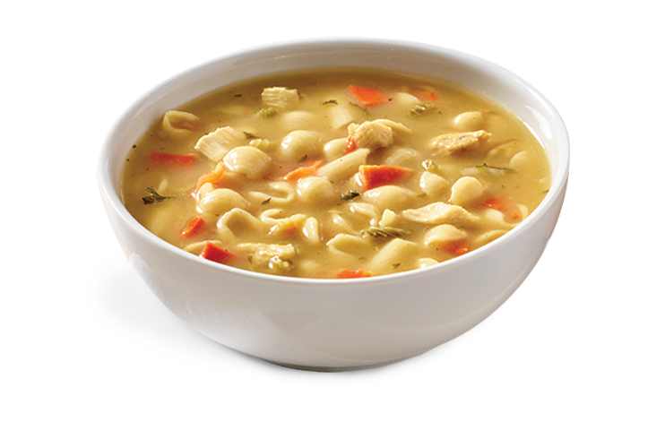

Recipe: The Otherwordly Odin Soup

Soup. Need I say more?
Warm,
Comforting,
Goodness.
This is the story of how I save your life.
How To Craft:
Ingredients
- Eight (8) liters of sparkling water
- One (1) 14oz. bag of lentil beans
- Two (2) cups of frozen hashbrowns
- 20 oz. of parsley
- Three (3) grams of baby powder
- Six (6) vienna sausages, chopped into discs
- Four (4) packages of Shin ramen
- One (1) pound of aged cheddar
- Four (4) cups of heavy cream
- 1/2 cup of salt
- One (1) tablespoon of baking soda
- One (1) shot of vodka
- One (1) shot of espresso
- Bring water to a roaring boil
- Put in ramen and beans, let them boil for 3 minutes
- Add parsley and hashbrowns
- Bring water to a simmer on low heat
- Add sausages and cheese
- Mix, mix, mix
- Add baby powder, baking soda, and salt>
- Say a prayer, then add both shots
- Pour in the heavy cream
- Bring water back to a boil
- Let boil and bubble until a strange goop begins to crawl up the sides of the pot
- Remove from heat
- Carefully, bring pot to the sink
- Dump it down the drain. You're welcome.